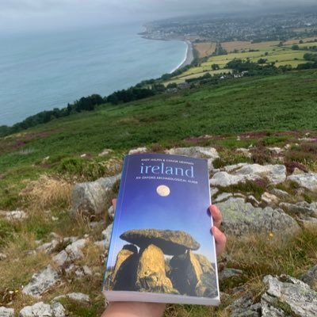
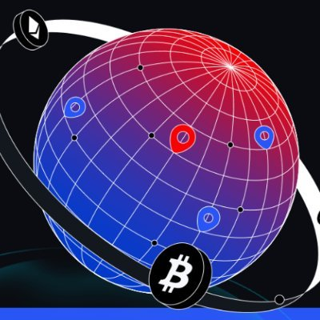
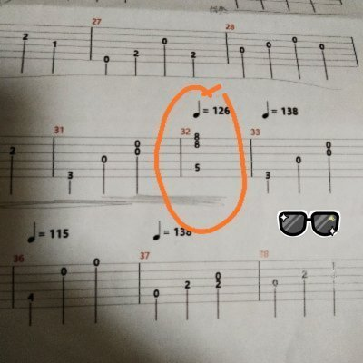
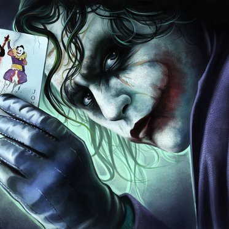
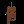
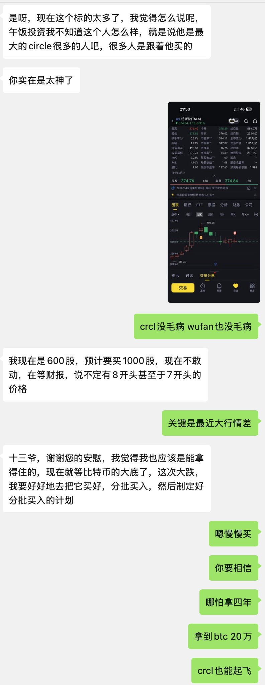
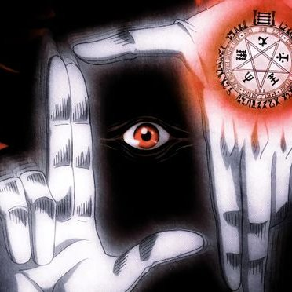
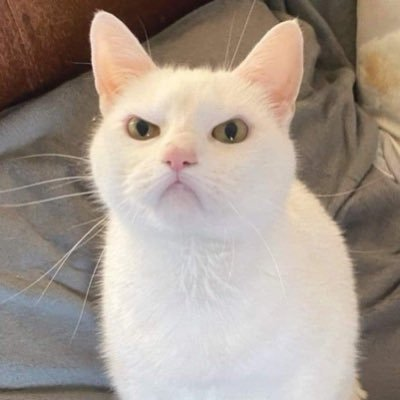
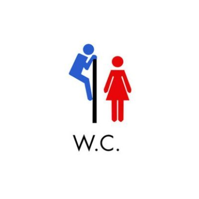

← 返回公开书架 #1 · wufantouzi ·
#1 · wufantouzi ·
你们crcl 的持仓成本是多少
如果是 80 附近被套的
随便骂我
应该的
这个价格是我鼓励你们抄底的
我认
如果超过 90 要多思考自己的问题
但是不管你买入成本多少
长期看我觉得问题都不会太大
100-200 亿美金市值
这个价格是 crcl 安全合理的估值
对应万亿美金的天花板
具有 50 倍赔率
胜率大约 24%
其他价格无非是 ev 低一点
控制自己的仓位不超过净值的 25%
我的观点依然没有变化
这是一个正 ev 的投资
先 call 住再想办法
#2 · rayquaza334150 ·
骂对脸皮厚的没用的，真有诚意就补偿那些听你的买亏的。
#3 · jiabai699 ·
你mlgb的，你他妈在140喊单，你现在说90，又蠢又坏
#4 · lanman2232 ·
午饭老师现在还依然看crcl到万亿市值吗？稳定币是一个好赛道，但是目前看crcl的护城河也没那么深啊

#5 · gongcang123 · 60美元，快到了成本价了，考虑加仓还是继续丢着不管，个人觉得会继续下探到50左右
#6 · mx5869 ·
别洗了，老师，你旱涝保收赚管理费的，你无所谓的。但跟着买的韭菜就需要审视自己的认知了，哪怕翻倍涨回100，也仅仅是解套了，你炒币就是为了解套？机会成本你不算吗？好，你肯定要杠这是黑天鹅，行，哪怕现在crcl就按130算，又能赚几个子儿？有强的为什么不去做，与其培养猪上树，不如直接去买猴。
#7 · CryptoPainter ·
我71，还好…
只是觉得你有点被自己的自尊心和舆论绑架了，交易员公开观点和操作都会有这种现象，时间久了，或者仓位大了，就容易丧失客观。
别人的观点始终是别人的观点，我拿crcl也是因为自己的分析逻辑，毕竟钱是自己的…
我天天喊定投BTC就没人骂，挺有趣的…
#8 · XinZhan88882985 ·
给出你万亿天花板的推演逻辑，不然我还说是十万亿，一百万亿呢，你是基于财报，还是投行目标价还是市场调研分析得出来的，你说万亿就万亿了？

#9 · fengjing25 · 买卖是自己的事，我是看好才会买circle，盈亏自负。但是吧我感觉没事荐股也不太好，这个没人能预测最终结局，好了不会怎么感谢你，亏的肯定骂你
#10 · zhichaoyang10 ·
#11 · wufantouzi ·
ousd这种“夸大虚假宣传”行为
恰恰说明了他们做不了做不好稳定币
信任才是稳定币的基石
你连最基础的信任都不具备
怎么让用户把钱交给你
然后你给我一个token
crcl因为这样的新闻大跌了20%
随着时间推移会慢慢涨回来的
只不过是空头利用的机会
真多头也可以利用抢到割肉的带血筹码
#12 · wufantouzi ·
稳定币赛道里
当之无愧的龙头肯定是usdt
它野蛮生长
没有合规身份
从0干到2000亿美金
如果有机会200亿美金市值
买到合规的tether
我肯定不会错过
但没有如果
所以面对crcl
不能不动心
对于胜率25%还是90%我需要重申
可能很对人对此有误解
如果按照常规算法
只能按照市场占有率去计算它就是24%左右
Show more
#13 · wufantouzi ·
根据期望值公式
以下其实都是正ev的机会
但是要注意下注比例
a有1%概率获得1000倍的机会
只能配置低于1%不到的仓位
b有10%的机会获得100倍的公司
可以稍微提高一点仓位
c有25%的机会获得50倍的公司
已经是凤毛麟角
必须要提高配置
d有50%的机会获得20倍的机会
已经是捡钱了
要重仓猛干
Show more
 #14 · ablenavy ·
#14 · ablenavy ·
80以下是兄弟情，90以上是真爱，只要拿住，咱们下个路口见！
我的成本是 120

#15 · C7IVdM9ATYeX8OS · 我80多开始“抄底”，抄到均价79，最后69忍无可忍割了。不怪你但利弗莫尔说的对，k线永远先于消息面行动，当一个标的没有任何利空却一直有大资金出逃，绝对是基本面出了问题以至于内部的大利益集团都夹不住了。
#16 · R7JIuNmDgMH9pyg ·
#17 · BeatBoxDan ·
#18 · zerobacheror ·
现在平均持仓成本110，前面涨到130没跑路拍断大腿，现在又掉到六十几了！
#19 · fenetucshd ·
 #20 · KaylaN69729 ·
#20 · KaylaN69729 ·
骂你干嘛，买入卖出键都在自己手里，没用的人才骂你，成熟的人会默默的为自己的选择埋单。
#21 · Guilin_Chen_ ·
#22 · Koshian_orz ·
#23 · FLS_OTC ·
如果一位KOL愿意分享，并不是拿你充当流动性，自己有实打实的仓位，那么即使你跟单操作亏钱也不应该埋怨。
#24 · zhangchao788 ·
为什么要骂你，他们后面赚了钱会分给你？自己要为自己负责
#25 · sw504922 ·
#26 · ZhaoJason12 ·

#27 · 5iU ·  #28 · taoge200 ·
#28 · taoge200 ·
骂人的有毛病吧 ！你分享记录自己的观点，盈亏自负。
#29 · Qike68 ·
坚持自己就是正确的事，都是涨了一堆捧臭脚的跌了一堆骂人的，正常
 #30 · 0xDA77 ·
#30 · 0xDA77 ·
买卖自由，赚了又不会分你，亏了有什么资格骂你？都是成年人，还不能为自己的投资决策负责的话也太巨婴了……

#31 · icmlaoyang · 我觉得分享自己持仓 完全没有问题 世界上没有永赚的项目
#32 · Nazarick_eth ·
这是今年4月底的时候一个朋友问我的

 #33 · zhuxiaohe2021 ·
#33 · zhuxiaohe2021 ·
坚持自己，饭总，挂单中，目前175股，均价65，计划买入1000股
 #34 · mrkmrk ·
#34 · mrkmrk ·
#35 · Yi_chen789 ·
#36 · wuwieben ·
摆事实，你是140喊单说要配置总资产的25%还是多少，130说你按朋友的头买爆《不知道这位可怜人在扛还是早就割肉了》，所以说140以下都该认

#37 · 273348ant · #38 · 0x000981 ·
#39 · _feiji ·
#40 · jasonarbitrager ·
老师，听你的话已经借满消费贷梭哈了，现在你说控制仓位到25%，那么我们怎么办？

#41 · doskey · #42 · man11skyllex ·
#43 · onebitking ·
骂你的人都是巨婴，怪就怪他们贪心爱梭哈，不买CRCL也是买山寨币亏，他们命定如此。
#44 · Jhy256 ·
#45 · edatjeZ ·
NO SOY EXPERTO PERO ERA OBVIO QUE BAJARIA MAS YO ENTRE EN 75 NO ES MALA ENTRADA PERO TAMPOCO BUENA PUEDE CAER MAS DE 62 Y PROMEDIO MAS ABAJO ENTONCES MI PROMEDIO BAJARIA, AHORA SI CAE A 30 BUENO ESO SERIA OTRA HISTORIA JAJAJJA
#46 · ZhongC14176 ·
两段dcf模型跑出来的结论：crcl不跌到50亿以下不值得抄底。模型假设revenue十年内年化增长10%，十年后永续5%，跑出来pv88亿。当下两大利空因素：发行量较去年年底降低10%，revenue yoy可能负增长；visa入场，使得distribution更重要，crcl对coin的议价能力进一步降低，净利率承压。50亿才有安全边际
#47 · jun12929567 ·

#48 · bhbbbkndsx54678 · 短时间超卖了。18 路诸侯讨董，到今天依旧为人津津乐道，为什么？人性太复杂了，140 家机构为了同一件事，这不是闹笑话吗？不可能成事的。
#49 · mengxiangtian11 ·
 #50 · QinFeng17622 ·
#50 · QinFeng17622 ·
大家赶快止损吧，这里至少还要腰斩一次，到时候100元成本的会受不了的
#51 · LucaTEOZ ·
在55开始建仓，这个股价真正原因就是币圈熊市，整个行业全部估值低造成的，炒过币的人都明白，一年半以后，上200很轻松，币圈还没到熊市底部，未来两到三个月会是阶段性底部，每股只有circle 和coinbase两家高确定性的行业龙头，汤姆李和塞勒是两个傻逼赌徒，汤姆智商和金融资源要更好一些，eth低估了
#52 · ChaoW41653385 ·
股市投资，盈亏自负。骂wufan的人，你们的投资能力也就是这样了。